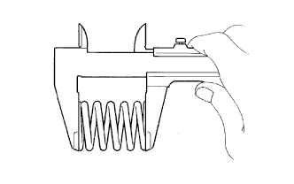

Oxygen Sensor (2AZ-FE) Installation |
| 1. Oxygen Sensor Installation |
 |
Using SST, install the oxygen sensor to the front exhaust pipe assembly.
| 2. Install Exhaust Pipe Assembly Front |
 |
Compression Spring Inspection
Using a vernier caliper, measure the free length of the compression spring.
 |
Gasket Installation
Insert a new gasket into the exhaust manifold converter as far as it goes by hand.
Using a wooden block and hammer, gradually tap in the gasket until it is flush with the exhaust manifold.
Install a new gasket to the exhaust pipe FR.
 |
Connect the exhaust pipe FR with the 2 bolts and 2 compression springs.
 |
Install the exhaust pipe assembly FR with the 2 bolts.
 |
Connect the oxygen sensor connector.
| 3. Inspect for Exhaust Gas Leaks |
Check that there are no exhaust gas leaks from the locations shown in the illustration (exhaust pipe joints and each sensor installation area).